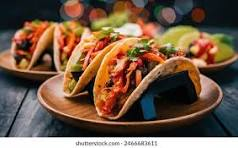

Tacos Recipe

This tacos recipe is a delicious Mexican dish that is sure to please. With seasoned meat, fresh toppings, and warm tortillas, it's a fun meal for any occasion.
Ingredients:
- Tortillas: Soft flour or corn tortillas.
- Meat: Ground beef, chicken, or turkey, cooked and seasoned.
- Toppings: Chopped lettuce, diced tomatoes, shredded cheese, and sour cream.
- Seasoning: Taco seasoning mix or your favorite spices.
Steps:
- In a skillet, cook the meat over medium heat until browned. Drain excess fat.
- Add taco seasoning and water according to package instructions. Simmer until thickened.
- Warm the tortillas in a dry skillet or microwave.
- Assemble the tacos by placing meat and toppings on each tortilla.
- Serve with your favorite salsa or hot sauce.
Home